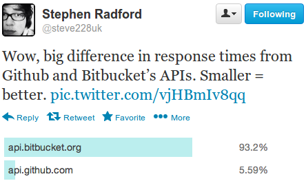
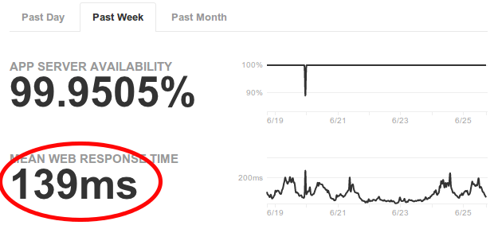

Interrupt-driven programming

Really?


123ms vs 139ms — Averages are misleading
Slow requests have a big impact
- Frustrate users, timeouts
- Break API clients
- Rants on Twitter
Fast requests do not, so forget averages, use 98 percentiles
and focus on the remaining 2% instead.
Logging timeouts
import signal
def handler(*args):
raise Exception("Request timed out")
signal.signal(signal.SIGALRM, handler)
class WsgiMiddleware(object):
def __init__(self, app):
self.app = app
def __call__(self, environ, start_response):
signal.setitimer(signal.ITIMER_REAL, 28)
try:
return self.app(environ, start_response)
finally:
signal.setitimer(signal.ITIMER_REAL, 0)
Full tracebacks of hotspots in Sentry
GET /api/1.0/repositories/m_eide/nav-maintenance-django/changesets
RequestTimeoutError
File "bitbucket/apps/api/v10/handlers.py", line 3288, in read
history = list(repo.history)
File "orochi/hg.py", line 1188, in __len__
return len(self._repo)
File "mercurial/localrepo.py", line 239, in __len__
return len(self.changelog)
File "mercurial/scmutil.py", line 897, in __get__
entry.obj = self.func(obj)
File "mercurial/localrepo.py", line 197, in changelog
c = changelog.changelog(self.sopener)
File "mercurial/changelog.py", line 115, in __init__
revlog.revlog.__init__(self, opener, "00changelog.i")
File "mercurial/revlog.py", line 241, in __init__
i = f.read()
File "interruptingcow/__init__.py", line 56, in handler
raise exceptionSolution? Simple. just:
- Rewrite each hotspot to run in constant time
- Leads to predictable, bounded max runtime
- Fixed upper bound is your new 100 percentile
Easier said than done
- Legacy/bad code often resists refactoring
- Dependencies hard to fix
- Environmental issues (flushed caches, maintenance)
- Unpredictable input
re.match(r'^(a+)+$', 'aaaaaaaaaaaaaaaaaaaaaaaaaaaab')
Interruptingcow
$ python
> from interruptingcow import timeout
> with timeout(2, RuntimeError):
> while True:
> pass
Traceback (most recent call last):
File "<stdin>", line 4, in <module>
File ".../interruptingcow/__init__.py", line 56, in handler
raise exception
RuntimeError
from interruptingcow import timeout, Quota
quota = Quota(1.0)
try:
with timeout(20.0, OuterTimeout):
try:
with timeout(quota, InnerTimeout):
try_the_expensive_thing_first()
except InnerTimeout:
do_the_cheap_alternative_instead()
except OuterTimeout:
print 'Program as a whole failed to return in 20 secs'
scalable content linkification
def replace(doc, pattern, tmpl):
try:
m = pattern.search(doc)
if m is not None:
head = doc[:m.start()] + tmpl.format(m.groups())
tail = doc[m.end():]
return head + replace(tail, pattern, tmpl)
except TimeoutException:
pass
return doc
with timeout(.1, TimeoutException):
print replace(doc, re.compile(r'[\da-f]{7,40}'),
'<a href="commits/{0}">{0}</a>')
- Iteratively linkifies commit hashes until time runs out
- Safely runs user-provided patterns
django-timelimit
{% load timelimit %}
<table class="commit-list">
<tr>
<th class="author">Author</th>
<th class="message">Message</th>
</tr>
{% for commit in commit_list %}
<tr>
<td class="author">{{ commit.author }}</td>
<td class="description">{{ commit.desc }}</td>
{% timelimit diffstat_quota %}
<td class="diffstat">{% diffstat commit %}</td>
{% else %}
<td class="note">diffstat not available</td>
{% endtimelimit %}
</tr>
{% endfor %}
</table>
- Share time intervals among multiple timeouts
diffstat_quota = interruptingcow.Quota(1.0)
Opportunities
- Works with legacy code
- Generic solution to different problems
- Optimistic approach (EAFP vs LBYL)
- Adapts to server load
Summary
- Page render times highly dependent on runtime factors
- Page timeouts have a disproportionally large impact
- Refactor, pre-compute, paginate, remove functionality, etc
- Time-box expensive code with cheap fallback
If it ain't fast, you ain't done
- Interruptingcow — time-box arbitrary Python code
bitbucket.org/evzijst/interruptingcow - django-timelimit — time-box Django template fragments
bitbucket.org/evzijst/django-timelimit
Slides at:
evzijst.bitbucket.org/pycon.au